Next case
Embarkei: onboarding that doesn't end on day one
An onboarding app first designed inside a multinational, later built end to end as a live SaaS.
HabiliTree turns a career into a living skill tree. You map what you can do today, pick the role you want, and get a short plan that closes the gap. I designed, built and launched it end to end.

Ask a manager what you need for the next role and you usually get a vague answer. Career ladders live in PDFs nobody reads, and courses teach you things without telling you what to learn or why. Meanwhile, the skills that jobs ask for are changing faster than ever.
workers will need reskilling or upskilling by 2030.
of the core skills jobs require are expected to change by 2030.
of employers name the skills gap as the biggest barrier to transforming their business.
Source: World Economic Forum, Future of Jobs Report 2025.
"Which career should I even pick?"
Has potential but no map of where each path leads.
"What's missing for my promotion?"
Wants to grow where they are, but can't see the gap.
"Do I start from zero?"
Wants a new field and undervalues the skills they already have.
"What do I learn now that AI is here?"
Overwhelmed by change and unsure where to put their time.
In 2025 I drew my own design skill tree in Illustrator: every skill a hexagon, every hexagon a level from one to five. It helped me see where I stood. But a poster can't tell you what is missing for the next role, and it doesn't change as you grow.
Before that, I had explored the same pain with a career-discovery program for young people: 20+ interviews and 8 personal career reports. The pattern was the same everywhere. People can't see their own skills, or the distance to where they want to go.
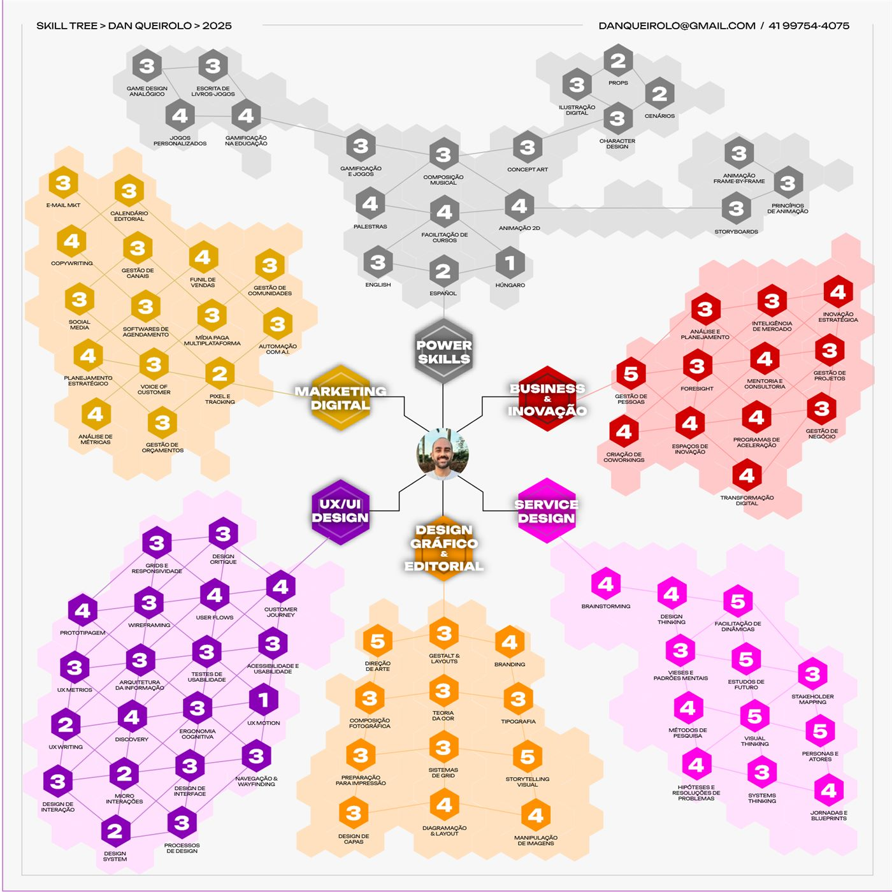
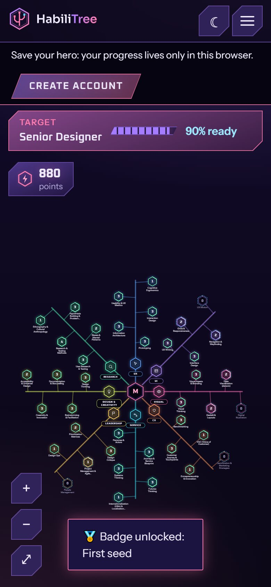
So I designed HabiliTree like one. Four principles guided every decision:
You see every skill of a career at once, grouped in branches, so growth stops being a list of guesses.
Each skill has five levels written as things you actually do, from "I understand the basics" to "I create new ways of doing it".
Pick a role and the tree shows what already counts, what is missing, and a readiness percentage.
Points, badges and streaks reward real effort. The tone is a coach, not a cartoon.
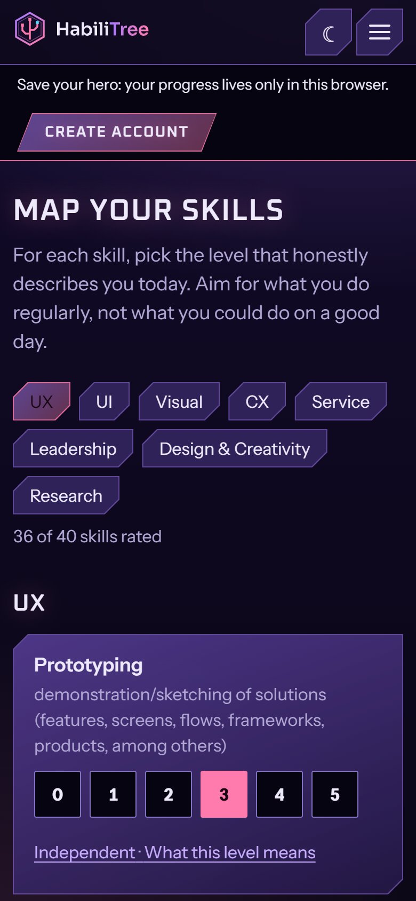
Rate each skill on five levels described in plain words. There is an "I'm not in this field yet" path for people in transition.
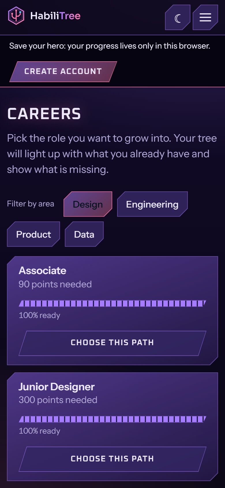
See every role on the ladder with how ready you are for it, and pick the one you want next.
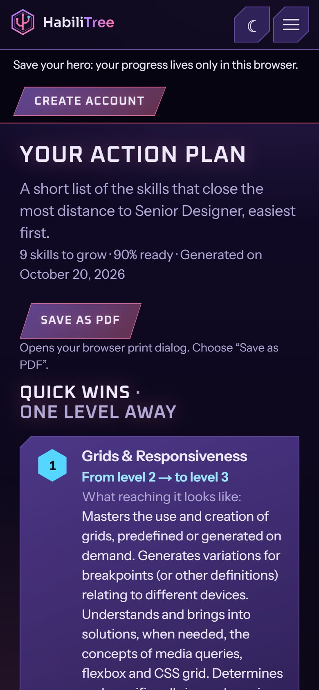
A short action plan, ordered by impact, starting with quick wins one level away. Save it as a PDF.
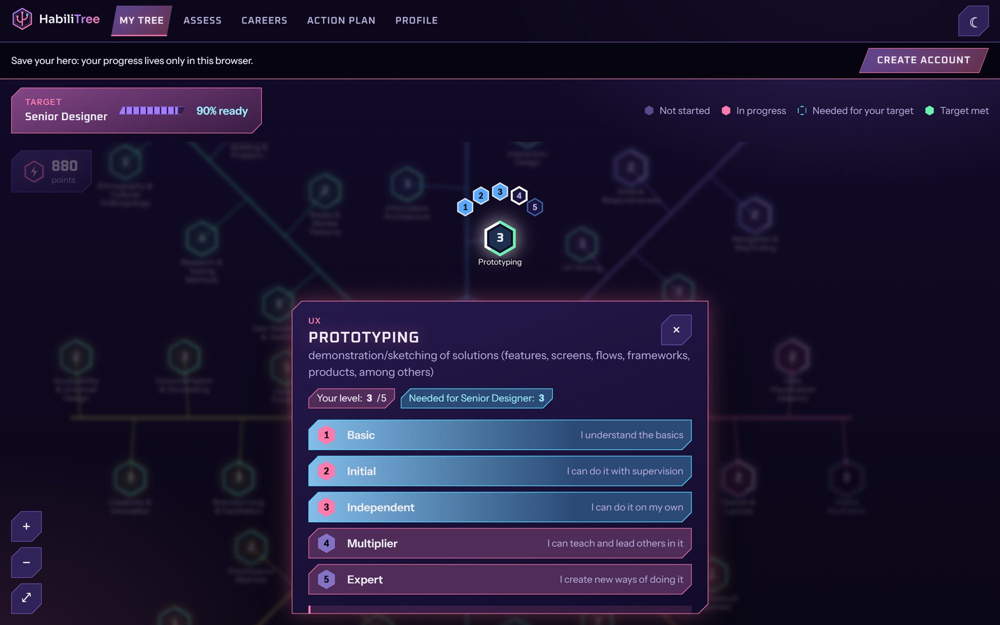
Gamification is my specialty, and the rule here was simple: every mechanic has to change a behavior, or it doesn't ship.
Every level you gain adds points, so progress you'd never notice becomes a number.
First skill mapped, first target chosen. Small wins that pull people into the next step.
Coming back on consecutive days keeps learning small and regular, not a once-a-year review.
Nodes fill and light up as you level up. State is shown by shape and icon too, never color alone.
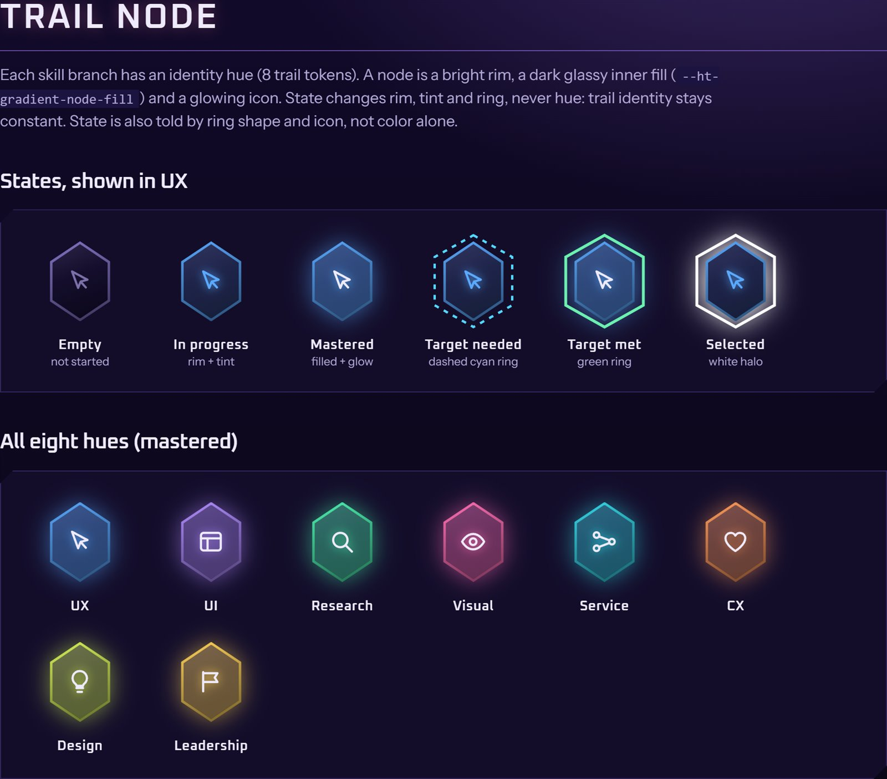
I started with the system, not the pages. Every color, font, space and shadow lives in one tokens file. A script turns it into CSS and checks WCAG AA contrast on every build, so a bad color pair can't reach production. A living style guide documents 19 components, with a changelog and semantic versions.
That paid off fast: I explored four visual directions in a single day, and every screen followed each change automatically.
Tokens, contrast checks and the first 19 components. Amber and blue, with a serif display font.
The serif felt too editorial for a game. Moved to green-black worlds with glowing hexagon nodes and 8 branch hues.
Still too calm. Violet glass panels, neon outlines, 45-degree cut corners and Oxanium, a squared techno font.
The drawn wordmark was hard to read. A new logo in Sora, a full logo kit, motion rules and a brand manual.
Level up your career.
Oxanium 700 · display, uppercase, +0.06emMap your skills on a living career tree and see exactly what stands between you and the role you want.
Instrument Sans 400/600 · text and interface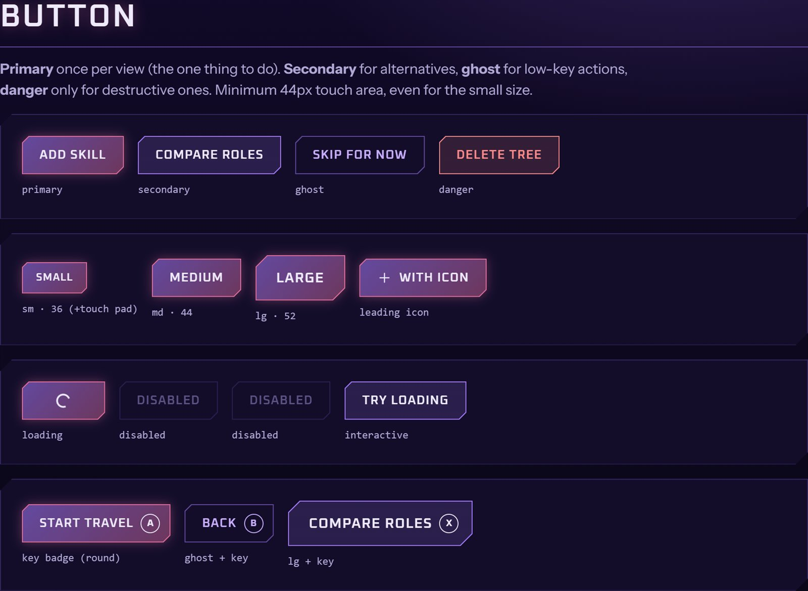
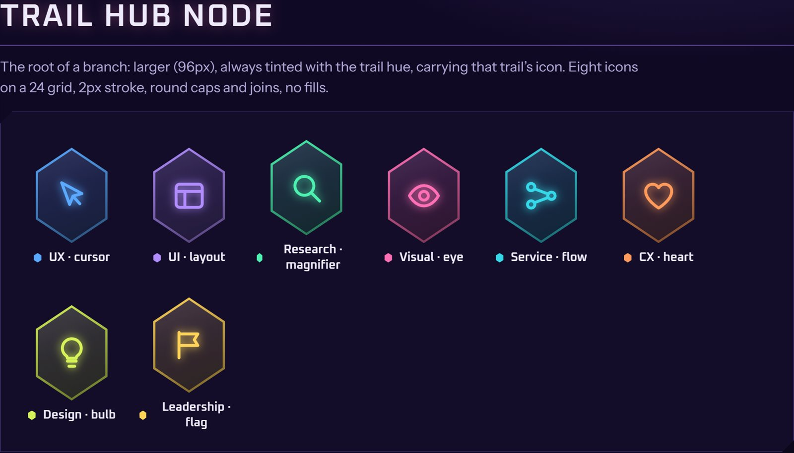
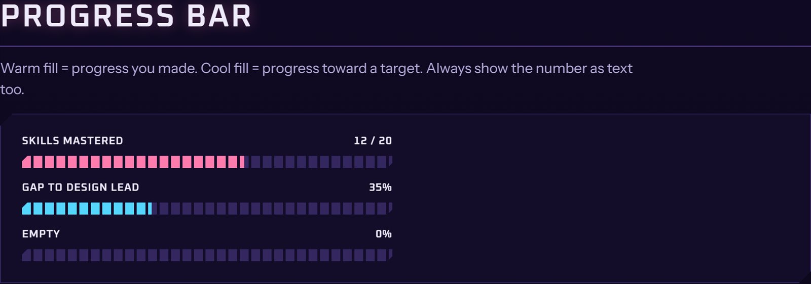
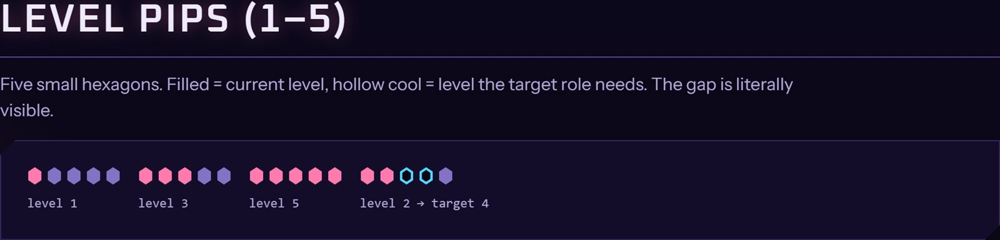
The token build fails the check if any text pair drops below 4.5:1.
Even the smallest node meets the minimum on mobile.
Shape, icon or text always carries the meaning too.
Glows and animations stop when the system asks for less motion.
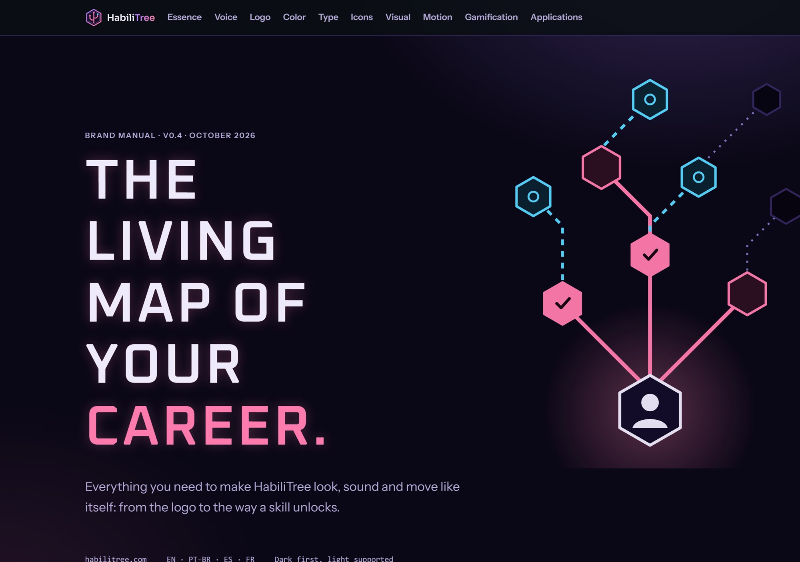
I built HabiliTree working with Claude as my engineering partner: Next.js for the app, Supabase for accounts and saved progress, Vercel for deploys and Resend for email. You can start without an account, your progress stays in your browser, and creating an account saves it to the cloud. You can delete it from your profile at any time.
Launch was part of the design work too. I set up the domain, a blog, a pricing page and a contact flow for companies, and produced the pitch deck and the first social campaigns from a single marketing brief, so every piece tells the same story with the same real numbers.
Payments are designed and ready to switch on for a Premium plan. The bigger step is HabiliTree for companies: custom career paths, a manager view and internal mobility, so people can grow inside a company instead of leaving to find a path.
An onboarding app first designed inside a multinational, later built end to end as a live SaaS.